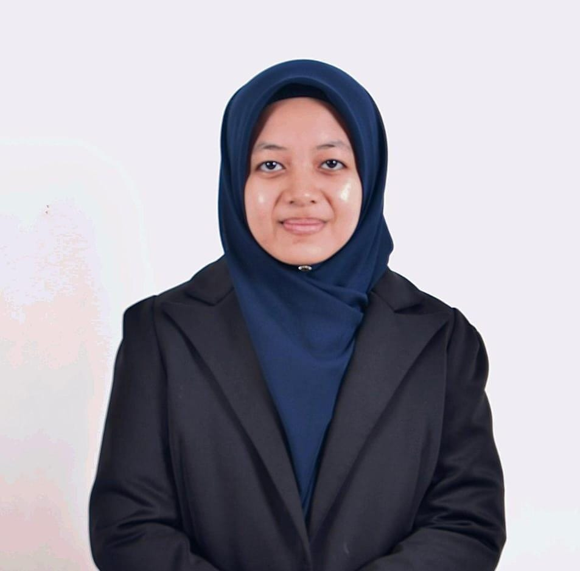

About Me
Hello! My name is Nik Rabiatul. I am a degree student of the Information Technology (Media Informatics) at Sultan Zainal Abidin University in the years 2023 - 2027 with a deep interest in animation production, visual design, and creative content development. Has skills in design, animation, and the use of creative software and digital development. Received the Dean's Award in semester 5 with a CGPA of 3.61, demonstrating high commitment to academics and learning. A creative, quick learner, able to work in a team, and enthusiastic about building a career in the animation and digital media industry.
I have experience using Unity, Autodesk Maya, Adobe Animate, Adobe Photoshop, Canva, and CapCut tools to create interactive digital projects. I have a strong passion for learning new technologies and improving my skills in the field of animation and game development. I am eager to contribute to innovative projects and collaborate with creative teams to create engaging digital experiences.
I actively participated in a student association, which is Persatuan Sukarelawan Siswa UniSZA where I gained valuable experience in teamwork, communication, and leadership. Through various activities and events, I developed strong organizational skills, learned to collaborate effectively with others, and enhanced my ability to solve problems in a professional environment. I also hold the position of deputy head of the media cluster and I use a lot of Adobe Photoshop software to produce posters and promote them on PERSIS social media.
My goal is to become an animator while continuing to develop my skills in digital media and interactive content creation. I am excited about the opportunities that lie ahead and am committed to making a positive impact in the field of animation and digital media.